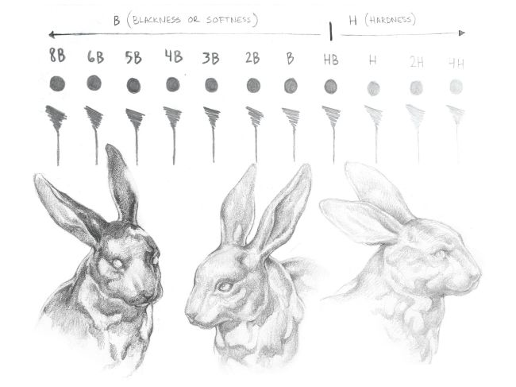
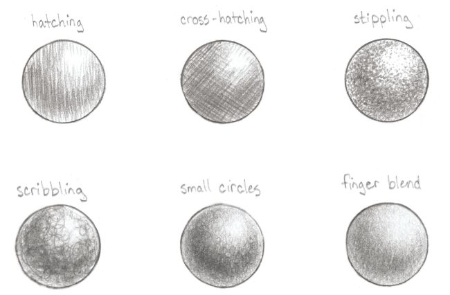
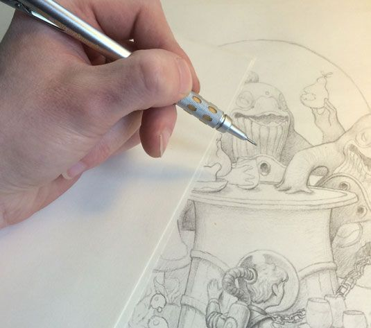
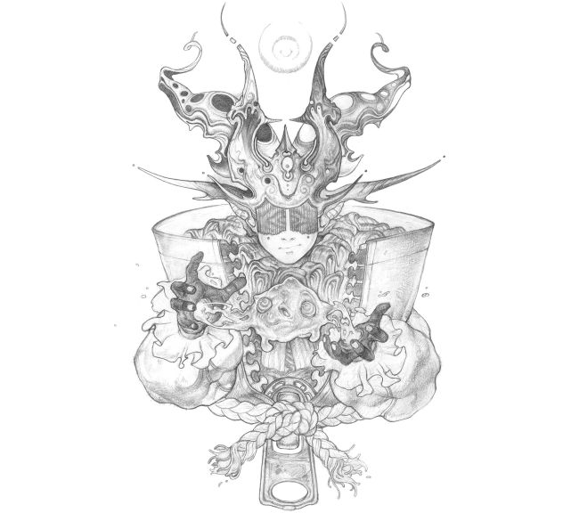

tools are useful but only when, if you have better skills.So it is much important to work on your skills first.
here we provides you tutorial and links to improove your skills.
Follow these guide lines according to your level.
begginer
advance
Sketching tips for a beginner
know your pencil
Having the right pencil for your sketch is essential. The hardness of the graphite is indicated on the side of the pencil: 'B' pencils are softer, 'H' are harder, and 'HB' sits in the middle – there's a big difference between a 4H and a 4B.
When you're learning how to draw, it's also worth considering using mechanical pencils alongside traditional ones. Keep in mind that most mechanical pencils come with HB pre-inserted, which gives you only the middle range to work with. Try different mark-making methods
There are plenty of sketching techniques to help you achieve different styles and effects. Above are some examples demonstrating different ways to create form and depth. "It’s important to experiment and find what works best for you, to not only complement but enhance your style," explains Von Rueden. "While I prefer smoother value transitions with the pencil strokes blending in against a thin outline, you may be more partial to cross-hatching against a bold outline." Avoid smudging
Use an extra piece of paper under your hand to avoid smudging your work When shading, use an extra piece of paper underneath your hand. Differentiate different textures
To show different textures within your sketch, you need to adjust your technique.A good starting point is to consider if the texture is rough or smooth, and then if it absorb or reflects light.
Video tutorials
- Learn to draw flying object
- Face tutorial
- Draw a realistic eye